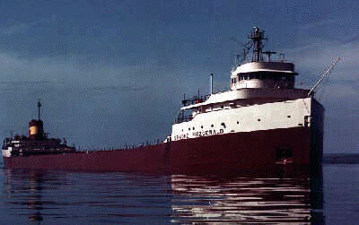
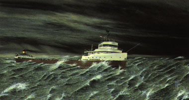
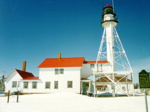

The sinking of the Edmund Fitzgerald and the loss of her 29-
member crew during a violent fall storm on November 10,
1975, just northwest of Whitefish Point in southeast
Lake Superior was at the time the worst maritime
disaster on the Great Lakes in nine years. Of the more
than 1000 ships that have found their graves under the
icy waters of the Great Lakes, the Fitzgerald is still
the largest ever to go down.

~Lake Superior~, the largest freshwater lake in the world,
31,820 sq mi, 350 mi long and 160 mi at its
greatest width, bordered on the W by NE Minnesota,
on the N and E by Ontario, Canada,
and on the S by NW Michigan and NW Wisconsin;
largest, highest, and deepest of the Great Lakes,
having a surface elevation of 602 ft
and a maximum depth of 1,302 ft.
Lake Superior is part of the
Great Lakes-St. Lawrence Seaway system,
and it is reached by oceangoing and
lake vessels through the
Sault Sainte Marie Canals (The Soo Locks),
which bypass rapids in the St. Marys River.
~The Witch of November~
{Excerpt}
"Each
autumn, a legendary meteorological force
threatens the Great Lakes. The
Edmund Fitzgerald,
wrecked by a Lake Superior storm (26) years ago,
is
testimony to her ferocity."

painting by Robert J. Tyrell
The legend lives on from the
Chippewa on down ~*~ ~*~ ~*~ ~*~ ~*~
Of the big lake they called 'Gitche Gumee'
The lake, it
is said, never gives up her dead
When the skies of November turn gloomy
With a load of iron ore twenty-six thousand tons more
Than the Edmund
Fitzgerald weighed empty.
That good ship and true was a bone to be chewed
When the gales of November came early.
The ship was the pride of the American side
Coming back from some
mill in Wisconsin
As the big freighters go, it was bigger than most
With
a crew and good captain well seasoned
Concluding some terms with a couple of
steel firms
When they left fully loaded for Cleveland
And later that
night when the ship's bell rang
Could it be the north wind they'd been
feelin'?
The wind in the wires made a tattle-tale sound
And a wave broke
over the railing
And every man knew, as the captain did too,
T'was the
witch of November come stealin'.
The dawn came late and the breakfast had to
wait
When the Gales of November came slashin'.
When afternoon came it
was freezin' rain
In the face of a hurricane west wind.
When suppertime came, the old cook came on deck sayin'.
Fellas,
it's too rough to feed ya.
At Seven P.M. a main hatchway caved in, he said
Fellas, it's been good t'know ya
The captain wired in he had water
comin' in
And the good ship and crew was in peril.
And later that night
when his lights went outta sight
Came the wreck of the Edmund Fitzgerald.
Does any one know where the love of God goes
When the waves turn
the minutes to hours?
The searches all say they'd have made Whitefish Bay
If they'd put fifteen more miles behind her.
They might have split up or
they might have capsized;
May have broke deep and took water.
And all
that remains is the faces and the names
Of the wives and the sons and the
daughters.
Lake Huron rolls, Superior sings
In the rooms of her ice-water
mansion.
Old Michigan steams like a young man's dreams;
The islands and
bays are for sportsmen.
And farther below Lake Ontario
Takes in what
Lake Erie can send her,
And the iron boats go as the mariners all know
With the Gales of November remembered.
In a musty old hall in Detroit they prayed,
In the Maritime
Sailors' Cathedral.
The church bell chimed till it rang twenty-nine times
For each man on the Edmund Fitzgerald.
The legend lives on from the
Chippewa on down
Of the big lake they call 'Gitche Gumee'.
Superior,
they said, never gives up her dead
When the gales of November come early!
by, Gordon Lightfoot
~The Crew Of The S.S. Edmund Fitzgerald~
 Nov. 11, 1913:
Michael E. Armagost,Thomas D. Bentsen
Fred J.
Beetcher,Edard F Bindon
Thomas D. Borgeson,Oliver J. Champeau
Nolan S.
Church,Ransom E. Cundy
Thomas E Edwards,Russell G. Haskell
Bruce L.
Hudson,George J. Holl
Allen G. Kalmon,Gorden Maclellan
Joseph
Mazes,John H. McCarthy
Eugene O'Brien,Karl A Peckol
John J.
Poviach,James A. Pratt
Robert C. Rafferty,Paul M. Riippa
John D.
Simmons,William J. Spengler
Mark A. Thomas,Ralph G. Walton
David E.
Wiess,Blaine H. Wilhelm
Captain, Ernest M. McSorley
Whitefish Point Lighthouse, Shipwreck Museum
~Fitzgerald Memorial
Service~
November 10 7pm
Just a few other November
casulaities
eighteen ships were lost killing 254 people.
Nov.
11-13, 1940:
57 men died when three freighters sank in Lake Michigan.
Nov. 18 1958:
33 men died on Lake Michigan with the sinking of the Carl
D. Bradley.
Nov. 29, 1966:
Daniel J. Morrell sank in Lake Huron killing
the 28 crew members.